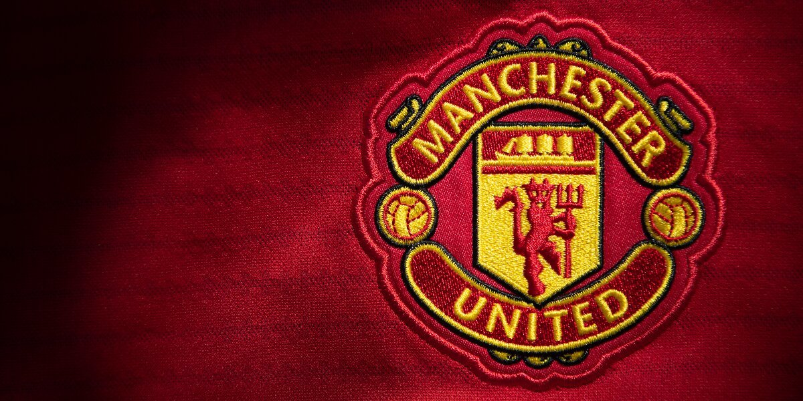

Фан-клуб
«Манчестер Юнайтед» вважається найпопулярнішим футбольним клубом у світі з найвищою відвідуваністю домашніх матчів серед усіх європейських клубів. Мережа фан-клубів включає понад 200 офіційно визнаних філій Manchester United Supporters Club (MUSC), розташованих у 71 країні світу. Для підтримки своєї популярності клуб регулярно подорожує по всьому світу в рамках передсезонної підготовки. За оцінками компанії Deloitte, у «Манчестер Юнайтед» 75 мільйонів уболівальників по всьому світу, тоді як за іншими оцінками цей показник становить 333 млн уболівальників. У 38 з 45 останніх сезонів чемпіонату Англії, починаючи з сезону 1964/65, середня відвідуваність домашніх матчів «Юнайтед» була найвищою серед всіх футбольних клубів Англії. Найбільшими об'єднаннями вболівальників клубу є Незалежна асоціація вболівальників «Манчестер Юнайтед» (Independent Manchester United Supporters Association, IMUSA), яка має тісні зв'язки з клубом через офіційний форум, і Траст уболівальників «Манчестер Юнайтед» (Manchester United Supporters 'Trust, MUST). Після захоплення клубу родиною Глейзерів в 2005 році частина вболівальників заснувала новий клуб «Юнайтед оф Манчестер». Західна трибуна стадіону «Олд-Траффорд», відома під назвою «Стретфорд Енд», є найбільш відомим місцем зосередження фанатів, які підтримують команду піснями й кричалками, а також різноманітними банерами.
